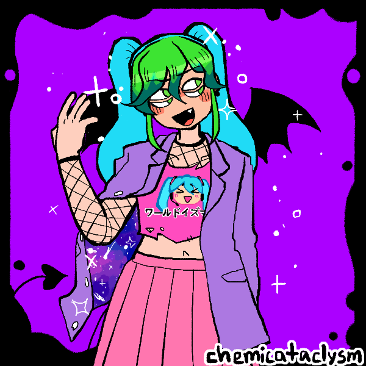
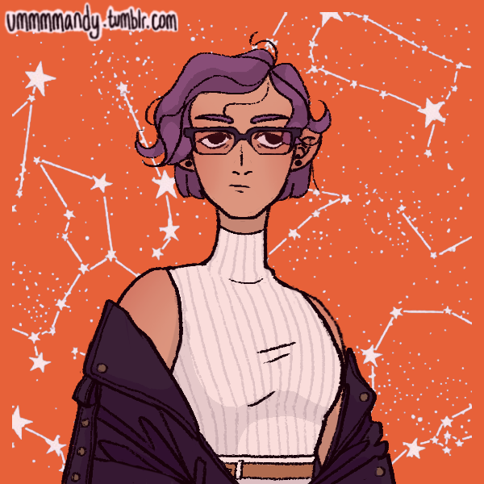
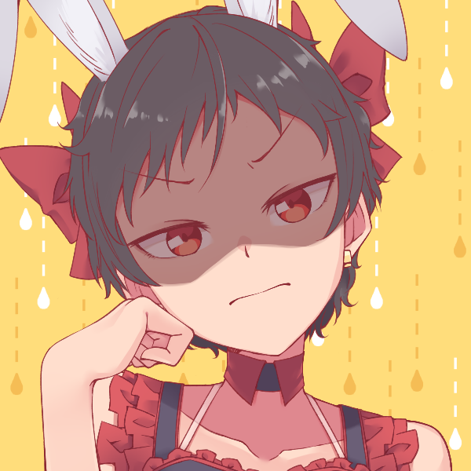
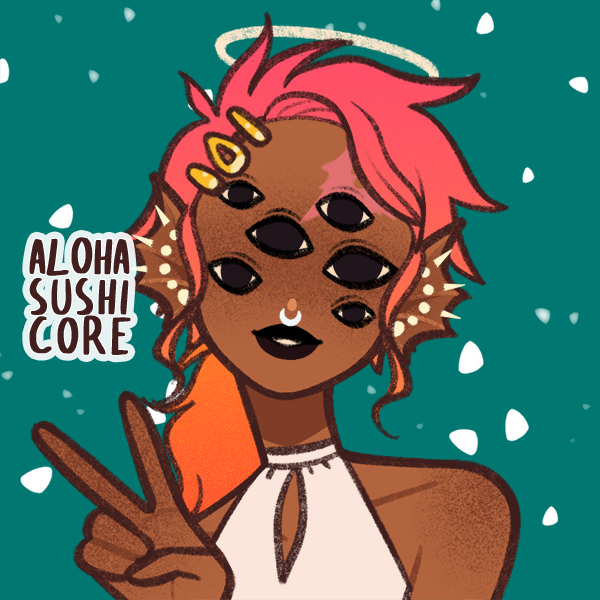

<link href="https://fonts.googleapis.com/css2?family=Gochi+Hand&amp;family=Monoton&amp;display=swap" rel="stylesheet">
<style>
{% capture raw_scss %}
@import "base";

body {
	background-color: #532e49;
	background-image: url('brick.jpg');
	color: white;
}

header {
	margin: 70px 0;
	text-align: center;

	p {
		font-family: monospace;
		margin: 1em;
	}
}

.sign {
	width: 90%;
	display: inline-block;
	margin: 0 auto;
	text-align: center;
	text-transform: uppercase;
	border: 5px solid #03fcf8;
	border-radius: 20px;
	background-color: rgba(#000, 0.5);
	@include box-shadow(0px 0px 78px 4px rgba(#03fcf8, 0.73));
	@include animation(border-flicker 3s linear infinite);

	h1 {
		font-family: 'Monoton', cursive;
		font-size: 40px;
		letter-spacing: 5px;
		color: #ff1493;
		text-shadow: 0px 0px 10px #f21616;
	}

	.offset {
		@include animation(letter-flicker 2s linear infinite);
	}
}

@include keyframes(border-flicker) {
	0% { opacity: 0.5; }
	2% { opacity: 1; }
	4% { opacity: 0.5; }
	8% { opacity: 1; }
	70% { opacity: 0.7; }
	100% { opacity: 1; }
}

@include keyframes(letter-flicker) {
	0% { opacity: 0.1; }
	2% { opacity: 0.1; }
	4% { opacity: 1; }
	19% { opacity: 1; }
	21% { opacity: 0.1; }
	23% { opacity: 1; }
	80% { opacity: 1; }
	83% { opacity: 0.4; }
	87% { opacity: 1; }
}

section {
	font-family: 'Gochi Hand', cursive;
	font-size: 18px;
	margin: 0 auto;
	margin-bottom: 70px;

	img {
		display: block;
		margin: 0 auto;
		border: 10px solid white;
		@include box-shadow(5px 5px 5px 0px rgba(0,0,0,0.75));

		&:hover { @include filter(hue-rotate(270deg) saturate(200%)); }
	}

	&:nth-child(odd) {
		img { @include transform(rotate(0.5deg)); }
	}

	&:nth-child(even) {
		img { @include transform(rotate(-0.3deg)); }
	}

	ul {
		padding: 0 40px;
		list-style-type: '- ';

		li.credits {
			list-style-type: 'x ';
		}
	}

	a {
		border-bottom: 1px dotted;
		line-height: 1.5;
		text-decoration: none;
		color: #00ffff;
	}
}

@media (min-width: 720px) {
	.sign {
		max-width: 700px;
	}

	section {
		width: 700px;

		img { float: left; }

		ul {
			display: table;
			padding-top: 15px;
		}

		&::after {
			/* clearfix */
			content: '';
			clear: both;
			display: table;
		}
	}
}

{% endcapture %}{{ raw_scss | scssify }}
</style>

<header>
	<div class="sign">
		<h1>re<wbr>in<span class="offset">v</span>ent your<wbr>self!</h1>
	</div>
	<p>worst case scenario you get an OC out of the process</p>
</header>

<section>
	
	<!--
		https://picrew.me/share?cd=AW5MDdAIVV
		https://picrew.me/share?cd=B68hxzmZgT
	-->
	<ul>
		<li class="credits">
			<a href="https://picrew.me/image_maker/230257">avatar maker</a>
			by <a href="https://chemicataclysm.tumblr.com/">chemicataclysm</a>
		</li>
		<li>four-eyes</li>
		<li>pre-med is hell, game dev is helter-skelter</li>
		<li>has six unfinished dating sim concepts + one joke Metroidvania sleeper hit</li>
		<li>never escaped her <a href="https://www.youtube.com/watch?v=Orb6mvWMyAs" title="&quot;Gimme×Gimme&quot;, 八王子P × Giga">vocaloid</a> phase; buys Miku shirts for mom and puppy-eyes her into wearing them at home</li>
		<li>world class babysitter (has a client waitlist on summer breaks)</li>
		<li>twice truly considered murder as a viable solution to personal struggles</li>
	</ul>
</section>

<section>
	
	<!--
		https://picrew.me/share?cd=O3ajXMrYYI
		https://picrew.me/share?cd=ANo12EqxtK
	-->
	<ul>
		<li class="credits">
			<a href="https://picrew.me/image_maker/114808">avatar maker</a>
			by <a href="https://ummmmandy.tumblr.com/">ummmmandy</a>
		</li>
		<li>can pass for an artist, can't draw for shit</li>
		<li>infra developer (i.e. no idea what the infra is for)</li>
		<li>cold-blooded, jacket not optional</li>
		<li>likes exactly 1 (one) <a href="{{ site.baseurl }}/stranger">solo artist</a></li>
		<li>behind on dishes but bathroom is always spotless</li>
		<li>almost successfully strangled themself with the umbilical cord before birth</li>
	</ul>
</section>

<section>
	
	<!-- https://picrew.me/share?cd=evQYIV91hd -->
	<ul>
		<li class="credits">
			avatar maker by <a href="https://www.pixiv.net/en/users/4900554">hetarage</a>
		</li>
		<li>her weight, soaking wet &le; the weight of her favorite summer dress, soaking wet</li>
		<li>stable career: has been with the same CRUD app for 16 months</li>
		<li>drinks sweetened condensed milk straight from the can</li>
		<li>draws alternate (better!) endings for harem manga (fav girls keep losing)</li>
		<li>was caregiver of her grandma for four years</li>
		<li>streams sometimes, keeps being mistaken for a vtuber</li>
	</ul>
</section>

<section>
	
	<!-- https://picrew.me/share?cd=SdFeoBlQur -->
	<ul>
		<li class="credits">
			<a href="https://picrew.me/image_maker/257476">avatar maker</a>
			by <a href="https://twitter.com/alohasushicore">alohasushicore</a>
		</li>
		<li>half-<a href="{{ site.baseurl }}/mermaid">mermaid</a> / third culture kid</li>
		<li>studied art history then somehow became a software PM</li>
		<li>has never misused "their", "there", and "they're", but has repeatedly pronounced awry as "<em>awww</em>-ree"</li>
		<li>keeps being mistaken for drowning at the local pool</li>
		<li>hobby hydroponic farmer</li>
		<li>has one <a href="https://fanlore.org/wiki/Families_of_Choice">Found Family</a>&trade; but is looking for another completely separate one <a href="https://en.wikipedia.org/wiki/Redundancy_(engineering)">just to be safe</a></li>
	</ul>
</section>
